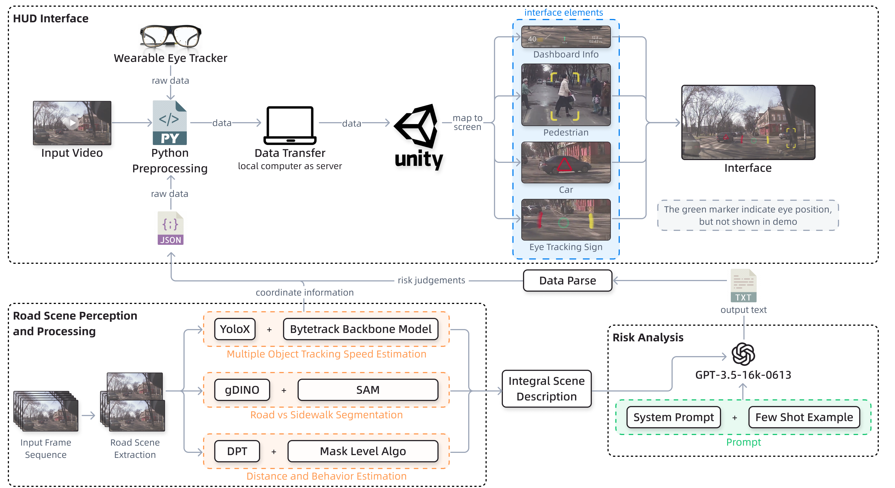
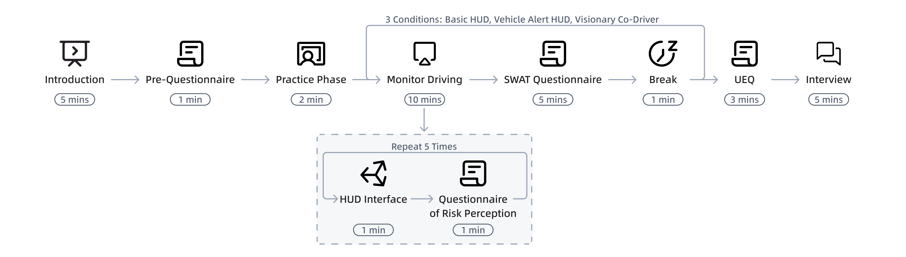
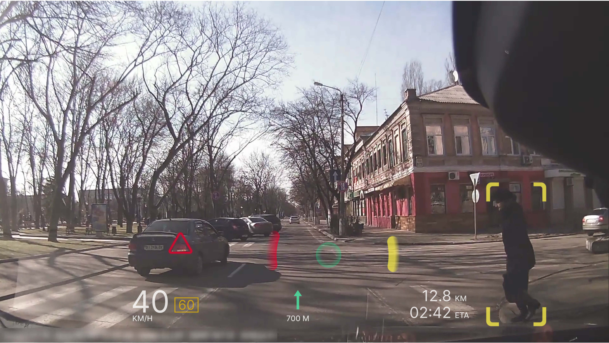
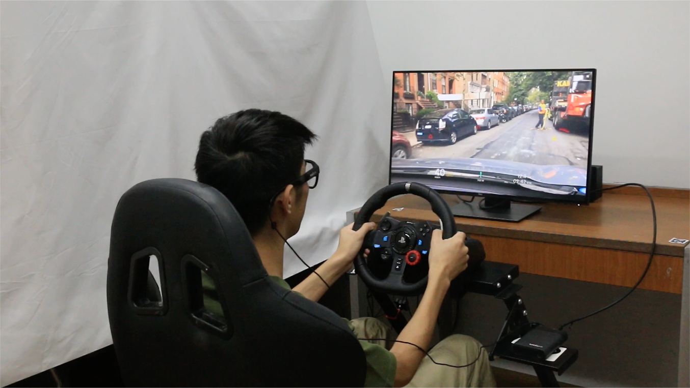

TL;DR: We propose a GOFE way to build a perception system for text-only-LLMs understanding driving scenario and enhance driver perception in a human-centric design.
Drivers' perception of risky situations has always been a challenge in driving. Existing risk-detection methods excel at identifying collisions but face challenges in assessing the behavior of road users in non-collision situations. This paper introduces Visionary Co-Driver, a system that leverages large language models (LLMs) to identify non-collision roadside risks and alert drivers based on their eye movements. Specifically, the system combines video processing algorithms and LLMs to identify potentially risky road users. These risks are dynamically indicated on an adaptive heads-up display interface to enhance drivers' attention. A user study with 41 drivers confirms that Visionary Co-Driver improves drivers' risk perception and supports their recognition of roadside risks.
Waiting for further information

The user study was conducted in a driving simulator environment equipped with a cockpit, a 27-inch LED screen, and Tobii Pro Glasses 3 to record eye-tracking data at 100 Hz. The experiment involved 41 licensed drivers (resulting in 36 valid datasets) who tested three distinct interface conditions—Basic HUD, Vehicle Alert HUD, and the Visionary Co-Driver (VCD)—in a counterbalanced order to reduce learning effects. The procedure consisted of five phases: an introduction, a pre-questionnaire with eye-tracker calibration, a practice phase to familiarize participants with the setup, a formal study phase, and a final session for the User Experience Questionnaire (UEQ) and interviews. During the formal study, participants viewed video clips from BDD and JAAD datasets; the videos were paused at specific intervals to administer risk perception questionnaires based on the Situation Awareness Global Assessment Technique (SAGAT), while cognitive workload was assessed using the Subjective Workload Assessment Technique (SWAT) after each condition.


